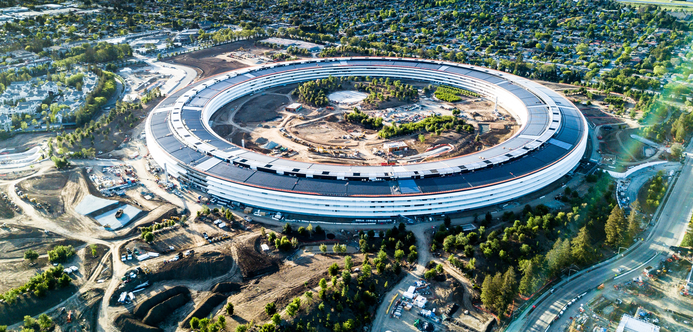
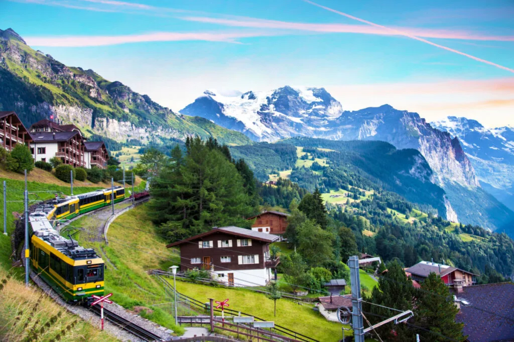

Um dos meus maiores objetivos de vida é viajar e vivenciar diferentes experiências ao redor do mundo, tanto profissionais quanto pessoais. Na esfera profissional, almejo conhecer os grandes centros de inovação tecnológica e praticar diferentes idiomas, enquanto no lado pessoal busco a conexão com paisagens marcantes e o desenvolvimento da minha expressão musical.
Além disso, tenho como meta pessoal me aprofundar na música e dominar instrumentos que sempre me fascinaram, aprimorando minha criatividade musical.
Visitar o Vale do Silício na Califórnia representa estar no coração do ecossistema de desenvolvimento de software, onde nasceram as tecnologias que moldam o mundo moderno.

Um dos meus maiores fascínios e metas de viagem pessoal é contemplar a grandiosidade dos Montes Suíços. A união entre a natureza preservada, o clima alpino e a arquitetura das cidades ao redor das montanhas torna essa experiência única e inspiradora.

Complementando essas jornadas, tenho como meta permanente expandir a fluência em novos idiomas para me comunicar com naturalidade em qualquer país e dedicar tempo ao aprendizado e prática, trazendo equilíbrio e criatividade para o meu dia a dia.